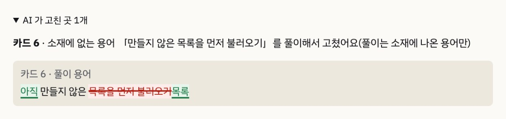

AI로 누구나 잘 만드는 시대,
차이를 만드는 건 결국 「나다움」입니다
취업 · 대외활동 · 프리랜서처럼 나를 보여 줘야 하는 순간은 누구에게나 옵니다. 그런데 주변에 물어보니 다들 해 보고는 싶은데 이렇게 말했습니다.
→ 올리기 전에 30일 뒤 내 계정을 먼저 보여 줍니다
→ 질문에 답만 하면 이름 · 색 · 첫 카드까지 이어집니다
→ 내 답에서 계정 주제 3~5개와 근거가 된 내 말을 찾아 줍니다
한 번 정한 개성이 끝까지 이어집니다
단계마다 나를 다시 설명하지 않아도 됩니다. 인터뷰에서 정리한 프로필 하나가 이름부터 카드뉴스까지 모든 생성의 입력이 됩니다.
앱도 내 계정처럼 바뀝니다
개성이 잡히면 그 개성의 캐릭터와 색감으로 앱 화면 자체가 바뀝니다. 남의 도구를 빌려 쓰는 느낌이 아니라, 내 계정의 작업실에서 일하는 느낌을 주려고 합니다. 글자가 잘 읽히는지 대비 검사는 그대로 유지합니다.
올리기 전에 보는 30일 뒤 프로필
- 실제 인스타 격자와 같게. 최근 게시물이 왼쪽 위, 프로필 격자에서 카드 양옆이 잘리는 정도까지 운영 계정에서 직접 재서 맞췄습니다.
- 계획 칸은 계정 주제를 번갈아. 같은 주제가 한 줄로 몰리지 않게 코드가 배치하고, 이미 만든 카드와 거의 같은 제목이면 다시 쓰게 합니다.
- 내 그림을 올리면 실제 게시물처럼. 칸에 그림을 올리면 그림 바탕 표지로 그리고, 제목이 잘 읽히는지 글자 뒤 명암비를 재서 맞춥니다. FirstFeed 는 그림을 직접 만들지 않고 그림 프롬프트를 뽑아 줍니다.
- 없는 걸 있는 것처럼 보이지 않게. 아직 안 만든 칸에는 「계획」 표시, 게시물 수도 「만든 카드 · 계획」으로 나누고, 없는 팔로워 수는 「–」로 둡니다.
내 이름으로 올라갈 글에
내가 하지 않은 말은 넣지 않습니다
같은 인터뷰 답을 같은 AI 모델에 검사 없이 그냥 넣어 세 번 받아 봤습니다(게시물 제목 27개).
제목에 내가 말한 적 없는 개수(「실수 5가지」, 「기능 3개」)가 붙었고, 한 번은 하지 않은 경험을 계정 주제로 넣었습니다.
내가 말하지 않은 숫자 · 영문 이름이 나오면 코드가 잡아 다시 쓰게 해서, 저장되는 결과에는 남지 않습니다.

- 계정 주제마다 근거가 된 내 말. 그 말이 실제 인터뷰 답에 있는지 코드가 한 번 더 확인합니다.
- 용어 풀이는 표시해서 보여 주기. 자료에 없는 설명은 「올리기 전에 맞는지 확인하세요」로 강조하고, 확인 전에는 업로드 폴더를 만들 수 없습니다.
- 개성은 내가 고친다. 말투를 반말로 바꾸면 소개글이 「… 정리해요」에서 「… 정리해」로 바뀝니다.
- 규칙의 한계도 적어 둡니다. 한글로 쓴 지어낸 경험처럼 코드가 못 잡는 것은 AI 검토와 사람 확인에 맡긴다고 밝혀 둡니다.
AI가 쓰면, 코드가 검사하고, 다시 씁니다
사용자의 Claude 구독을 그대로
내 컴퓨터에서 실행하고, 인터뷰 답 같은 개인적인 내용은 컴퓨터 밖으로 나가지 않습니다. 앱이 부르는 AI는 파일 쓰기 · 명령 실행이 막혀 있습니다.
호출마다 붙는 토큰 35% 줄임
코딩용 기본 지시문을 앱 전용으로 바꿔, 계정을 처음 만드는 흐름 한 번의 입력이 13.9만 → 8.3만 토큰, 시간은 368 → 253초가 됐습니다(2회 측정).
빠른 모델과 강한 모델을 나눠서
꼬리 질문처럼 자주 오가는 일은 빠른 모델, 개성 정리 · 카드 글 · 검토는 강한 모델. 작은 모델이 오히려 출력이 2배였던 과제는 바꾸지 않았습니다.
다음 30일은 반응을 보고 다시 그립니다
내 개성으로 시작하는 첫 피드
코드 · 기획서 · 개발 일지 · 측정 결과가 모두 저장소에 공개되어 있습니다.